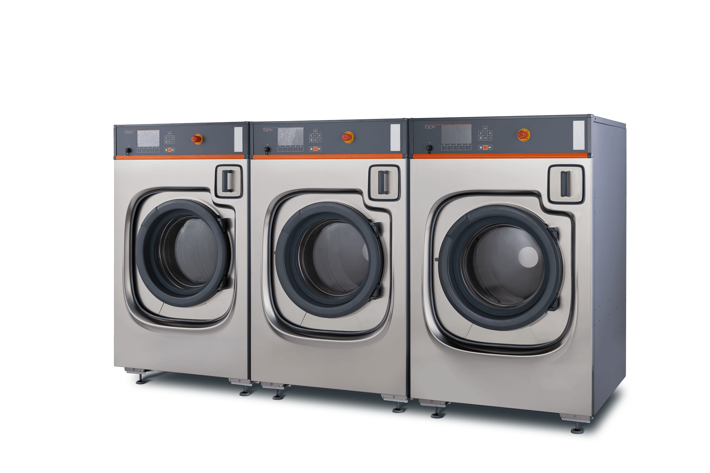
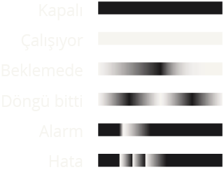
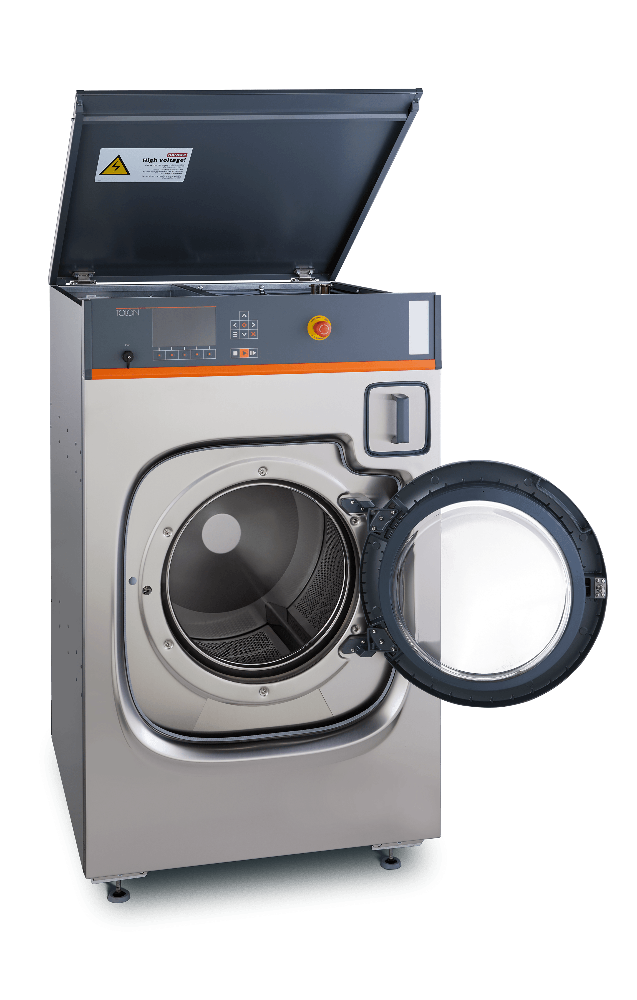
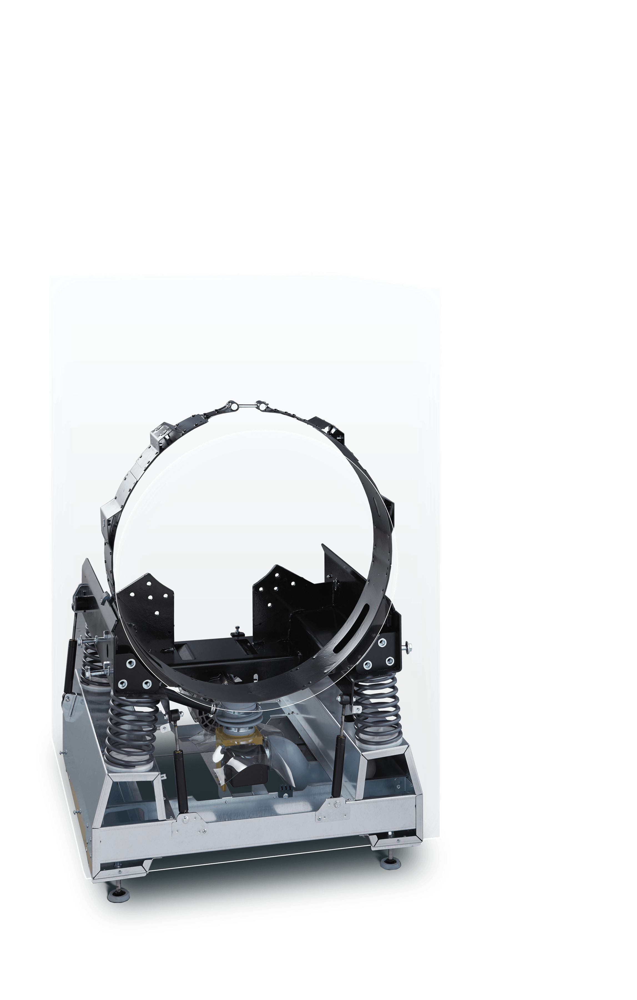
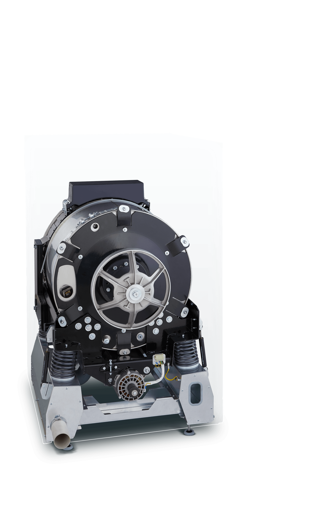
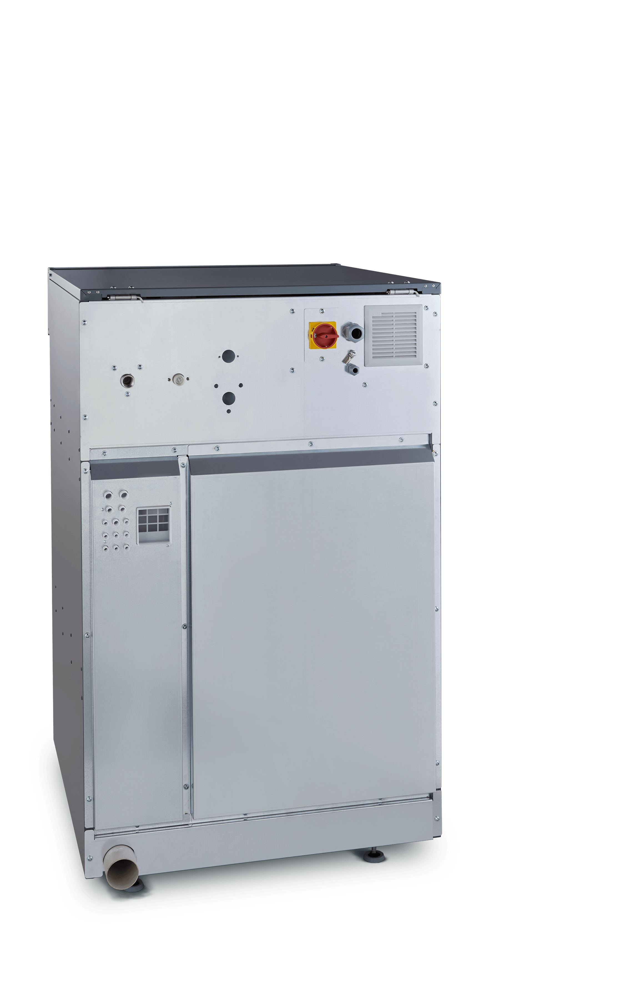
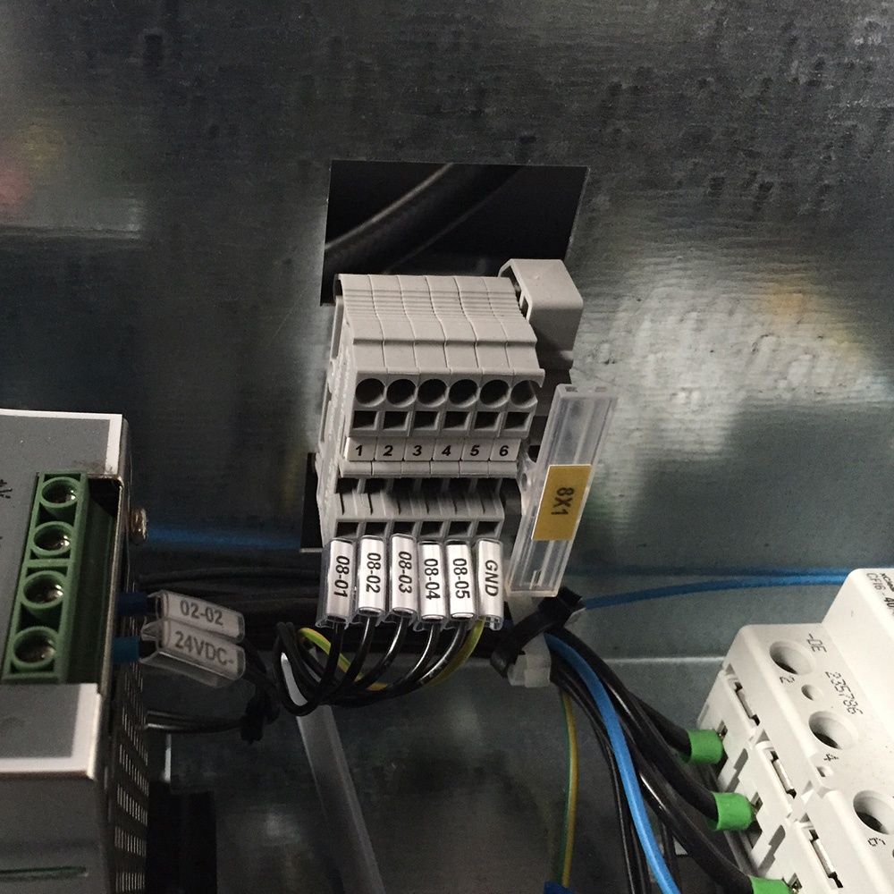

TWE S serisi
Çamaşır yıkama makineleri

Kompakt tasarım
Minimum alan, maksimum kapasite

Durum ışığı
Makinenin durumu
her yerden görülebilir


Önden deterjanlık
Kolay erişim,
hızlı yükleme
TPE-2017-03737
Modüler gözler
Esnek kimyasal kullanımı

Otomatik kilit
Güvenli kullanım
Beşik start
Düşük elektrik tüketimi
Uzun kayış ömrü
TPE-2017-03648
Üst kapak
Kolay servis erişimi

Yalın konstrüksiyon
Hızlı servis
İvme ölçer
Sorunsuz ve verimli sıkma
TPE-2017-03738
Konik tambur ağzı
Zahmetsiz boşaltma

Minimum tambur aralığı
Su tasarrufu, hızlı ısıtma
Kenetleme sistemi
Hassas yıkama

Galvanize şase
Çok uzun ömür
Serbest duruş
Ankraj gerektirmez

Kapalı rulman yatağı
Bakım gerektirmez, kolay sökülür
Seramik kaplı mil,
Teflon™ keçe
Uzun ömürlü, aşınmaz
TPE-2017-03749

Dozajlama ünitesi
Tam otomasyona hazır
